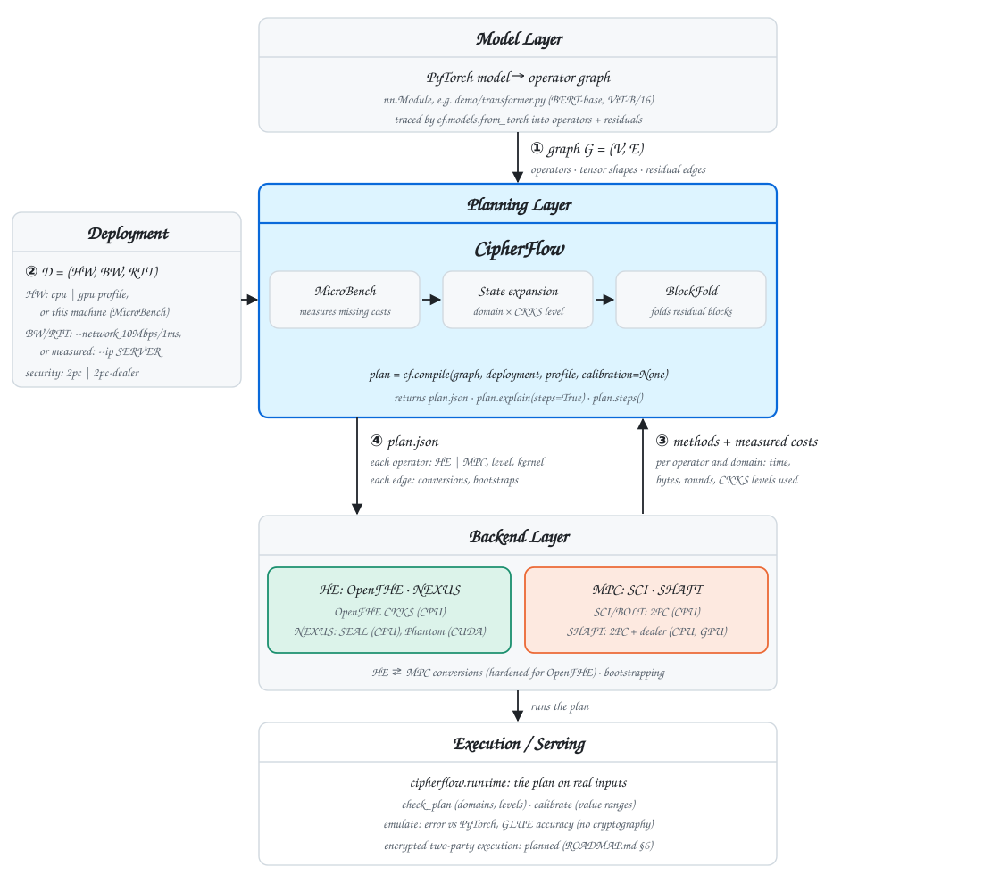
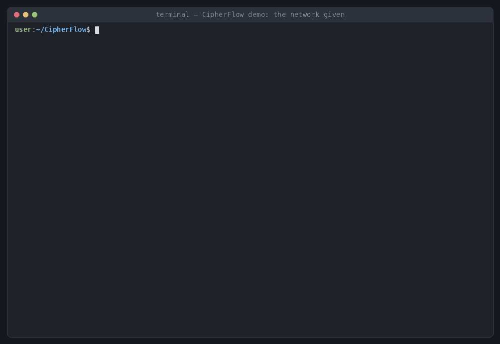
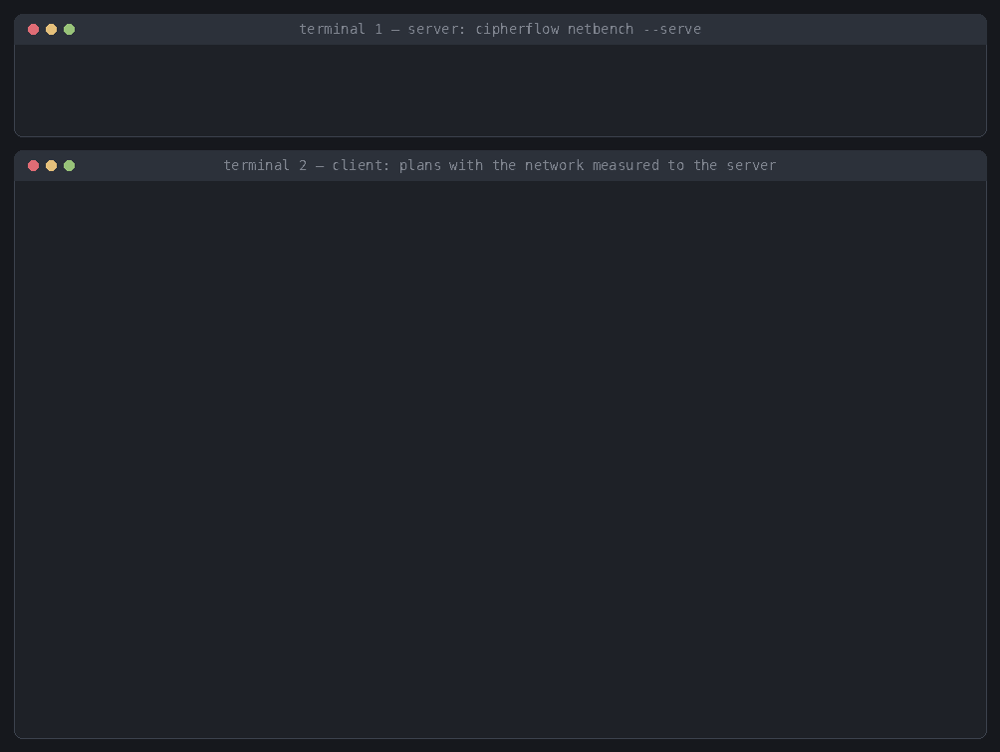
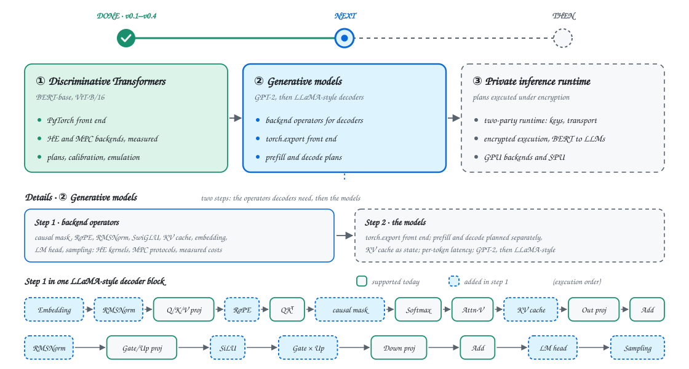

Faster than any fixed split
speedup on BERT-base over state-of-the-art static hybrid placements (BumbleBee, BOLT, BLB)
speedup on ViT, measured on commodity CPU and GPU platforms in the NeurIPS 2026 evaluation
Follows the hardware and bandwidth chosen above; click a bandwidth to select it. CipherFlow is never slower than the best static plan, and where a single primitive is best it chooses that plan.
Measure, expand, fold
Costs measured where you deploy
Every operator, conversion and bootstrap is timed on the target hardware, with its bytes and rounds, so the plan follows measured costs instead of a fixed rule.
One search over domains and levels
Each operator's state is its domain and, in HE, the CKKS levels left. Placement, conversions and bootstraps become one shortest-path search over these states.
Residual blocks folded into steps
Each residual block is a single-entry, single-exit region. Folding it into one step contains the growth from branching joins and keeps planning tractable on Transformer-scale graphs.
From a PyTorch model to a placement plan
CipherFlow plans against an abstraction of the backends: methods, each one operator in one domain with the CKKS levels it consumes, the inputs it accepts and its measured cost. A library plugs in by registering its methods and a cost profile.

Operators, shapes and residual edges, traced from an nn.Module.
Hardware profile; bandwidth and RTT, given or measured; security model.
Per operator and domain: time, bytes, rounds, CKKS levels.
Value ranges on real inputs, so approximations hold where HE runs.
HE or MPC per operator; conversions and bootstraps; latency.
A Transformer in, the plan out
Plan a BERT-base encoder written in PyTorch and read the plan operator by operator: HE or MPC, the CKKS levels, the conversions and bootstraps before each operator, and where each operator is in the code.
python -m demo.plan_pytorch_model \
--model bert --network 10Mbps/1ms
# on the server cipherflow netbench --serve # on the client python -m demo.plan_pytorch_model \ --model bert --ip SERVER_IP

Two terminals: the network measured between client and server

Plan your own model
import torch import cipherflow as cf from demo.transformer import bert # any encoder written in PyTorch graph = cf.models.from_torch(bert(), torch.randn(1, 128, 768)) plan = cf.compile(graph, cf.Deployment.of("cpu", "10Mbps/1ms")) print(plan.explain(steps=True)) # the plan, operator by operator plan.to_json("plan.json")
cipherflow compile --torch demo/transformer.py:bert --input-shape 1,128,768 \
--network 10Mbps/1ms --steps -o plan.json
cipherflow explain plan.json --steps
cipherflow backends # HE and MPC backends, and which pairs fit
git clone https://github.com/UCF-ML-Research/CipherFlow.git
cd CipherFlow
pip install -e . # PyTorch for from_torch, the demo and the runtime
Measured HE and MPC backends
Homomorphic encryption
- ✓OpenFHE CKKSAll operators on one 128-bit parameter set, fast and precise bootstrapping, hardened HE↔MPC conversion, wide-range GeLU, Softmax and LayerNorm
- ✓NEXUSSEAL on CPU, Phantom on CUDA; reference-scaled costs
Secure multi-party computation
- ✓SCI / BOLT (EzPC)Two parties, no third party; CPU
- ✓SHAFT (CrypTen)Two parties and a trusted dealer; CPU and GPU
- ○SPUCheetah and SEMI2K; planned
From encoders to generative models
BERT and ViT encoders are done. Generative models come next, first the backend operators decoders need and then the models; after them, a runtime that executes plans under encryption.

The full roadmap lists every done and planned item.